Week 8 - CADE 691
Themes and Colors
Weekly Check In/
Download .zip
Start Recording
Today’s Agenda
- Weekly Check In
- Foundational Skills
- CRAN vs. {remotes}
- Themes
- Pre-Built
- Packages
- Custom
- Color
- Built-in Color
- Color Palettes
- Accessibility
- Collaborative Practice
- Looking Ahead
Norms
| In person norms | And also, for online learning… |
|---|---|
| Be fully present to each other & the work. | Keep your video on when possible. In large groups, mute your microphone when not talking. Close/mute/minimize other apps and devices to avoid distraction. |
| Assume positive intent & also take responsibility for the impact you have. | Remember online interaction masks even more of the full story. Notice when you are making assumptions, and seek information to check them. |
| Embrace collaboration. | Use the gallery view so you can see everyone. Use breakout groups as an opportunity to collaborate. |
| Be open to learning and accept non-closure. | Expect the inevitable technical glitches and learning curves. Exercise patience with one another. |
| Be aware of when to step up and step back. When stepping back, do so as an active listener. | Try out different modes of participation. Step back by making space for others to engage in these. |
| Land your plane–get to the point you intended. | We all know how hard it is to be talked at, especially in a Zoom session, so let’s keep it to a minimum. |
Review/
Foundational Skills
CRAN & install.packages()
- Most packages are downloadable from CRAN
- “Comprehensive R Archive Network”
- Hosts thousands of packages
- Quality checks
- Version control
- {tidyverse} is on CRAN
- {remotes} is also a package on CRAN
{remotes} & install_*()
- Not all packages are downloadable from CRAN
- {remotes} helps us install the ones that aren’t
- {dsbox} is not on CRAN but is downloadable from GitHub
- We will use the
install_github()function from {remotes} to install {dsbox}
New data today = AAUP
The American Association of University Professors (AAUP) is a nonprofit membership association of faculty and other academic professionals. This report compiled by the AAUP shows trends in instructional staff as a percentage of employees between 1975 and 2011.
# A tibble: 10 × 3
year position percentage
<dbl> <chr> <dbl>
1 1975 full_time_tenured 29
2 1975 full_time_tenure_track 16.1
3 1975 full_time_non_tenure_track 10.3
4 1975 part_time 24
5 1975 grad_student 20.5
6 1989 full_time_tenured 27.6
7 1989 full_time_tenure_track 11.4
8 1989 full_time_non_tenure_track 14.1
9 1989 part_time 30.4
10 1989 grad_student 16.5Review: Line Plots
Review: Line Plots
- Note: I am storing this plot to
p
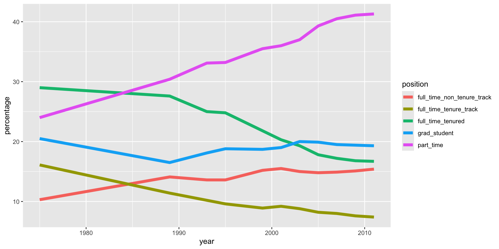
Recall {ggplot2} Components
Plots made with {ggplot2} are made of numerous components.

Recall {ggplot2} Layers
Today, we’ll be focusing on theme().
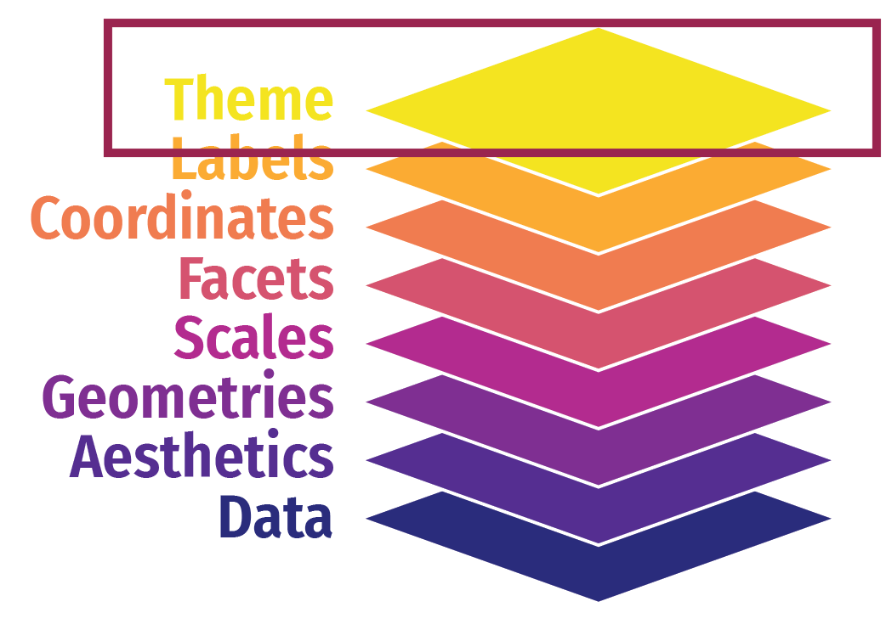
Data-to-Ink Ratios
Suggestion from Tufte
- Edward Tufte, a statistician and professor emeritus at Yale University, is known for his work in data viz.
- Tufte suggests that the data should be the “star of the show” in a visualization –> the data-ink ratio should be high
\(\text{data-to-ink ratio} = \dfrac{\text{data ink}}{\text{total ink}}\)
Think again about the necessity of all the non-data components of your plot - e.g., your theme!
Themes and non-data ink
The ‘theme’ involves editing the content that supports the data but does not deliver the quantitative information itself: background, grid lines, ticks, labels, legends, etc. – “non-data ink”.
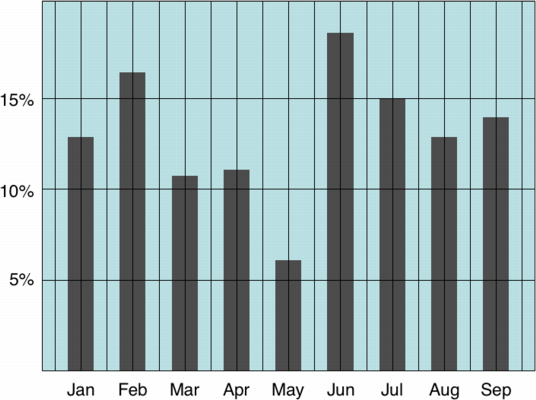
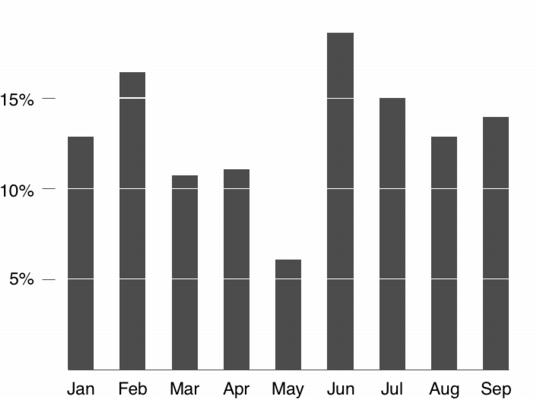
Themes and non-data ink
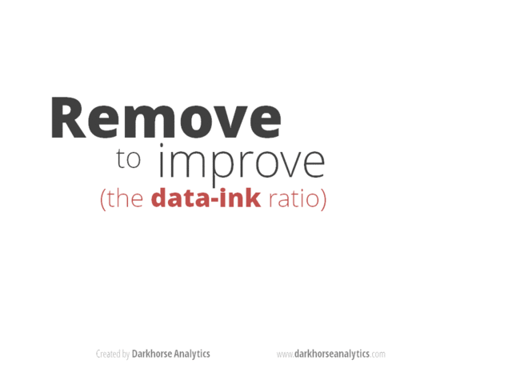
Themes
Pre-Built Themes
- {ggplot2} already has several themes built in
- You’ve used these already:
theme_minimal()theme_light()theme_dark()theme_bw()theme_void()theme_classic()theme_linedraw()theme_test()theme_gray()
Other Theme Packages
Theme Packages - {ggthemes}
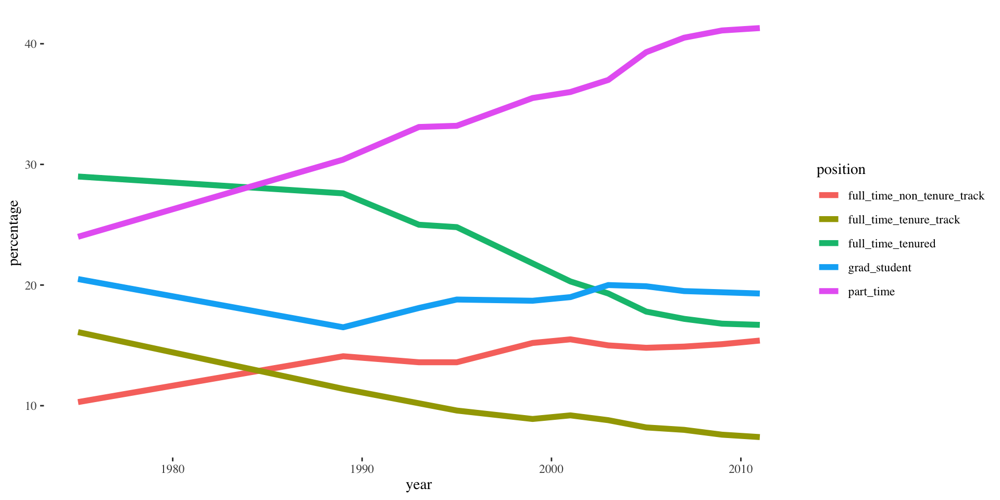
Theme Packages - {ggthemes}
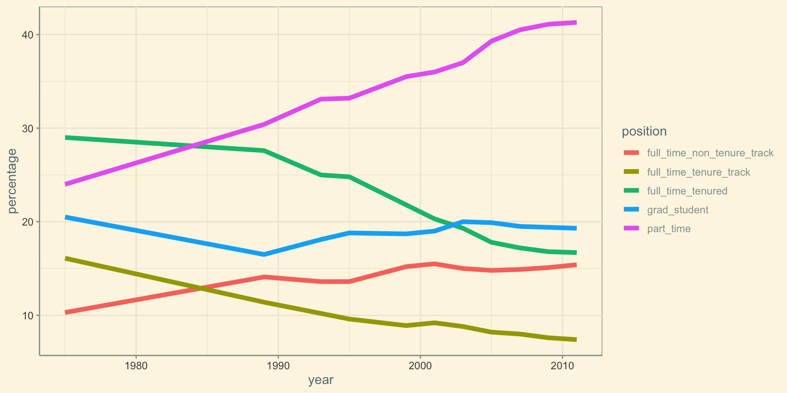
Theme Packages - {ggthemes}
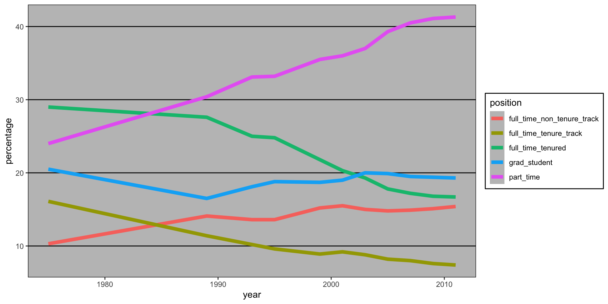
Theme Packages - {pilot}
- accessible, modern, for discrete data only (no gradients)
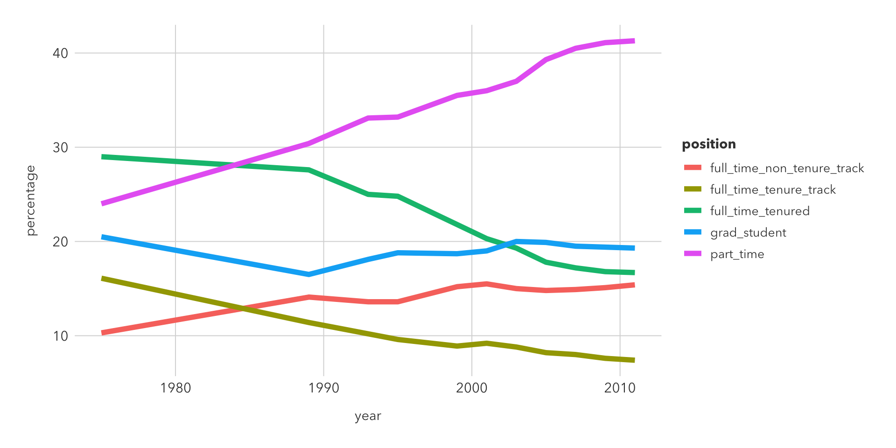
Theme Packages - {hrbrthemes}
- modern, typography-centered, discrete & continuous
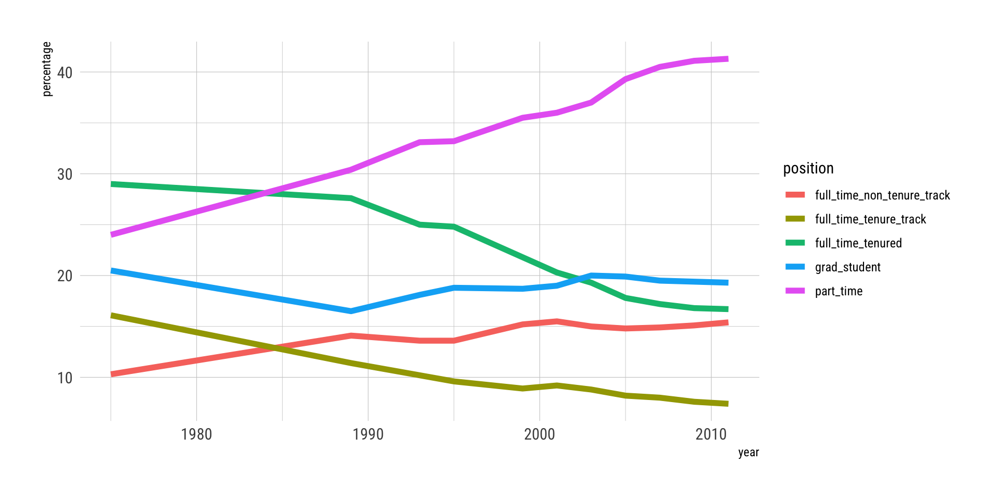
Custom Themes
Custom Themes
- Pre-built themes are just when someone has customized all the theme options for you
<theme> List of 144
$ line : <ggplot2::element_line>
..@ colour : chr "black"
..@ linewidth : num 0.5
..@ linetype : num 1
..@ lineend : chr "butt"
..@ linejoin : chr "round"
..@ arrow : logi FALSE
..@ arrow.fill : chr "black"
..@ inherit.blank: logi TRUE
$ rect : <ggplot2::element_rect>
..@ fill : chr "white"
..@ colour : chr "black"
..@ linewidth : num 0.5
..@ linetype : num 1
..@ linejoin : chr "round"
..@ inherit.blank: logi TRUE
$ text : <ggplot2::element_text>
..@ family : chr ""
..@ face : chr "plain"
..@ italic : chr NA
..@ fontweight : num NA
..@ fontwidth : num NA
..@ colour : chr "black"
..@ size : num 11
..@ hjust : num 0.5
..@ vjust : num 0.5
..@ angle : num 0
..@ lineheight : num 0.9
..@ margin : <ggplot2::margin> num [1:4] 0 0 0 0
..@ debug : logi FALSE
..@ inherit.blank: logi TRUE
$ title : <ggplot2::element_text>
..@ family : NULL
..@ face : NULL
..@ italic : chr NA
..@ fontweight : num NA
..@ fontwidth : num NA
..@ colour : NULL
..@ size : NULL
..@ hjust : NULL
..@ vjust : NULL
..@ angle : NULL
..@ lineheight : NULL
..@ margin : NULL
..@ debug : NULL
..@ inherit.blank: logi TRUE
$ point : <ggplot2::element_point>
..@ colour : chr "black"
..@ shape : num 19
..@ size : num 1.5
..@ fill : chr "white"
..@ stroke : num 0.5
..@ inherit.blank: logi TRUE
$ polygon : <ggplot2::element_polygon>
..@ fill : chr "white"
..@ colour : chr "black"
..@ linewidth : num 0.5
..@ linetype : num 1
..@ linejoin : chr "round"
..@ inherit.blank: logi TRUE
$ geom : <ggplot2::element_geom>
..@ ink : chr "black"
..@ paper : chr "white"
..@ accent : chr "#3366FF"
..@ linewidth : num 0.5
..@ borderwidth: num 0.5
..@ linetype : int 1
..@ bordertype : int 1
..@ family : chr ""
..@ fontsize : num 3.87
..@ pointsize : num 1.5
..@ pointshape : num 19
..@ colour : NULL
..@ fill : NULL
$ spacing : 'simpleUnit' num 5.5points
..- attr(*, "unit")= int 8
$ margins : <ggplot2::margin> num [1:4] 5.5 5.5 5.5 5.5
$ aspect.ratio : NULL
$ axis.title : NULL
$ axis.title.x : <ggplot2::element_text>
..@ family : NULL
..@ face : NULL
..@ italic : chr NA
..@ fontweight : num NA
..@ fontwidth : num NA
..@ colour : NULL
..@ size : NULL
..@ hjust : NULL
..@ vjust : num 1
..@ angle : NULL
..@ lineheight : NULL
..@ margin : <ggplot2::margin> num [1:4] 2.75 0 0 0
..@ debug : NULL
..@ inherit.blank: logi TRUE
$ axis.title.x.top : <ggplot2::element_text>
..@ family : NULL
..@ face : NULL
..@ italic : chr NA
..@ fontweight : num NA
..@ fontwidth : num NA
..@ colour : NULL
..@ size : NULL
..@ hjust : NULL
..@ vjust : num 0
..@ angle : NULL
..@ lineheight : NULL
..@ margin : <ggplot2::margin> num [1:4] 0 0 2.75 0
..@ debug : NULL
..@ inherit.blank: logi TRUE
$ axis.title.x.bottom : NULL
$ axis.title.y : <ggplot2::element_text>
..@ family : NULL
..@ face : NULL
..@ italic : chr NA
..@ fontweight : num NA
..@ fontwidth : num NA
..@ colour : NULL
..@ size : NULL
..@ hjust : NULL
..@ vjust : num 1
..@ angle : num 90
..@ lineheight : NULL
..@ margin : <ggplot2::margin> num [1:4] 0 2.75 0 0
..@ debug : NULL
..@ inherit.blank: logi TRUE
$ axis.title.y.left : NULL
$ axis.title.y.right : <ggplot2::element_text>
..@ family : NULL
..@ face : NULL
..@ italic : chr NA
..@ fontweight : num NA
..@ fontwidth : num NA
..@ colour : NULL
..@ size : NULL
..@ hjust : NULL
..@ vjust : num 1
..@ angle : num -90
..@ lineheight : NULL
..@ margin : <ggplot2::margin> num [1:4] 0 0 0 2.75
..@ debug : NULL
..@ inherit.blank: logi TRUE
$ axis.text : <ggplot2::element_text>
..@ family : NULL
..@ face : NULL
..@ italic : chr NA
..@ fontweight : num NA
..@ fontwidth : num NA
..@ colour : chr "#4D4D4DFF"
..@ size : 'rel' num 0.8
..@ hjust : NULL
..@ vjust : NULL
..@ angle : NULL
..@ lineheight : NULL
..@ margin : NULL
..@ debug : NULL
..@ inherit.blank: logi TRUE
$ axis.text.x : <ggplot2::element_text>
..@ family : NULL
..@ face : NULL
..@ italic : chr NA
..@ fontweight : num NA
..@ fontwidth : num NA
..@ colour : NULL
..@ size : NULL
..@ hjust : NULL
..@ vjust : num 1
..@ angle : NULL
..@ lineheight : NULL
..@ margin : <ggplot2::margin> num [1:4] 2.2 0 0 0
..@ debug : NULL
..@ inherit.blank: logi TRUE
$ axis.text.x.top : <ggplot2::element_text>
..@ family : NULL
..@ face : NULL
..@ italic : chr NA
..@ fontweight : num NA
..@ fontwidth : num NA
..@ colour : NULL
..@ size : NULL
..@ hjust : NULL
..@ vjust : NULL
..@ angle : NULL
..@ lineheight : NULL
..@ margin : <ggplot2::margin> num [1:4] 0 0 4.95 0
..@ debug : NULL
..@ inherit.blank: logi TRUE
$ axis.text.x.bottom : <ggplot2::element_text>
..@ family : NULL
..@ face : NULL
..@ italic : chr NA
..@ fontweight : num NA
..@ fontwidth : num NA
..@ colour : NULL
..@ size : NULL
..@ hjust : NULL
..@ vjust : NULL
..@ angle : NULL
..@ lineheight : NULL
..@ margin : <ggplot2::margin> num [1:4] 4.95 0 0 0
..@ debug : NULL
..@ inherit.blank: logi TRUE
$ axis.text.y : <ggplot2::element_text>
..@ family : NULL
..@ face : NULL
..@ italic : chr NA
..@ fontweight : num NA
..@ fontwidth : num NA
..@ colour : NULL
..@ size : NULL
..@ hjust : num 1
..@ vjust : NULL
..@ angle : NULL
..@ lineheight : NULL
..@ margin : <ggplot2::margin> num [1:4] 0 2.2 0 0
..@ debug : NULL
..@ inherit.blank: logi TRUE
$ axis.text.y.left : <ggplot2::element_text>
..@ family : NULL
..@ face : NULL
..@ italic : chr NA
..@ fontweight : num NA
..@ fontwidth : num NA
..@ colour : NULL
..@ size : NULL
..@ hjust : NULL
..@ vjust : NULL
..@ angle : NULL
..@ lineheight : NULL
..@ margin : <ggplot2::margin> num [1:4] 0 4.95 0 0
..@ debug : NULL
..@ inherit.blank: logi TRUE
$ axis.text.y.right : <ggplot2::element_text>
..@ family : NULL
..@ face : NULL
..@ italic : chr NA
..@ fontweight : num NA
..@ fontwidth : num NA
..@ colour : NULL
..@ size : NULL
..@ hjust : NULL
..@ vjust : NULL
..@ angle : NULL
..@ lineheight : NULL
..@ margin : <ggplot2::margin> num [1:4] 0 0 0 4.95
..@ debug : NULL
..@ inherit.blank: logi TRUE
$ axis.text.theta : NULL
$ axis.text.r : <ggplot2::element_text>
..@ family : NULL
..@ face : NULL
..@ italic : chr NA
..@ fontweight : num NA
..@ fontwidth : num NA
..@ colour : NULL
..@ size : NULL
..@ hjust : num 0.5
..@ vjust : NULL
..@ angle : NULL
..@ lineheight : NULL
..@ margin : <ggplot2::margin> num [1:4] 0 2.2 0 2.2
..@ debug : NULL
..@ inherit.blank: logi TRUE
$ axis.ticks : <ggplot2::element_blank>
$ axis.ticks.x : NULL
$ axis.ticks.x.top : NULL
$ axis.ticks.x.bottom : NULL
$ axis.ticks.y : NULL
$ axis.ticks.y.left : NULL
$ axis.ticks.y.right : NULL
$ axis.ticks.theta : NULL
$ axis.ticks.r : NULL
$ axis.minor.ticks.x.top : NULL
$ axis.minor.ticks.x.bottom : NULL
$ axis.minor.ticks.y.left : NULL
$ axis.minor.ticks.y.right : NULL
$ axis.minor.ticks.theta : NULL
$ axis.minor.ticks.r : NULL
$ axis.ticks.length : 'rel' num 0.5
$ axis.ticks.length.x : NULL
$ axis.ticks.length.x.top : NULL
$ axis.ticks.length.x.bottom : NULL
$ axis.ticks.length.y : NULL
$ axis.ticks.length.y.left : NULL
$ axis.ticks.length.y.right : NULL
$ axis.ticks.length.theta : NULL
$ axis.ticks.length.r : NULL
$ axis.minor.ticks.length : 'rel' num 0.75
$ axis.minor.ticks.length.x : NULL
$ axis.minor.ticks.length.x.top : NULL
$ axis.minor.ticks.length.x.bottom: NULL
$ axis.minor.ticks.length.y : NULL
$ axis.minor.ticks.length.y.left : NULL
$ axis.minor.ticks.length.y.right : NULL
$ axis.minor.ticks.length.theta : NULL
$ axis.minor.ticks.length.r : NULL
$ axis.line : <ggplot2::element_blank>
$ axis.line.x : NULL
$ axis.line.x.top : NULL
$ axis.line.x.bottom : NULL
$ axis.line.y : NULL
$ axis.line.y.left : NULL
$ axis.line.y.right : NULL
$ axis.line.theta : NULL
$ axis.line.r : NULL
$ legend.background : <ggplot2::element_blank>
$ legend.margin : NULL
$ legend.spacing : 'rel' num 2
$ legend.spacing.x : NULL
$ legend.spacing.y : NULL
$ legend.key : <ggplot2::element_blank>
$ legend.key.size : 'simpleUnit' num 1.2lines
..- attr(*, "unit")= int 3
$ legend.key.height : NULL
$ legend.key.width : NULL
$ legend.key.spacing : NULL
$ legend.key.spacing.x : NULL
$ legend.key.spacing.y : NULL
$ legend.key.justification : NULL
$ legend.frame : NULL
$ legend.ticks : NULL
$ legend.ticks.length : 'rel' num 0.2
$ legend.axis.line : NULL
$ legend.text : <ggplot2::element_text>
..@ family : NULL
..@ face : NULL
..@ italic : chr NA
..@ fontweight : num NA
..@ fontwidth : num NA
..@ colour : NULL
..@ size : 'rel' num 0.8
..@ hjust : NULL
..@ vjust : NULL
..@ angle : NULL
..@ lineheight : NULL
..@ margin : NULL
..@ debug : NULL
..@ inherit.blank: logi TRUE
$ legend.text.position : NULL
$ legend.title : <ggplot2::element_text>
..@ family : NULL
..@ face : NULL
..@ italic : chr NA
..@ fontweight : num NA
..@ fontwidth : num NA
..@ colour : NULL
..@ size : NULL
..@ hjust : num 0
..@ vjust : NULL
..@ angle : NULL
..@ lineheight : NULL
..@ margin : NULL
..@ debug : NULL
..@ inherit.blank: logi TRUE
$ legend.title.position : NULL
$ legend.position : chr "right"
$ legend.position.inside : NULL
$ legend.direction : NULL
$ legend.byrow : NULL
$ legend.justification : chr "center"
$ legend.justification.top : NULL
$ legend.justification.bottom : NULL
$ legend.justification.left : NULL
$ legend.justification.right : NULL
$ legend.justification.inside : NULL
[list output truncated]
@ complete: logi TRUE
@ validate: logi TRUECustom Themes
- You can create your theme settings in one .R script and copy/paste them into your current script.
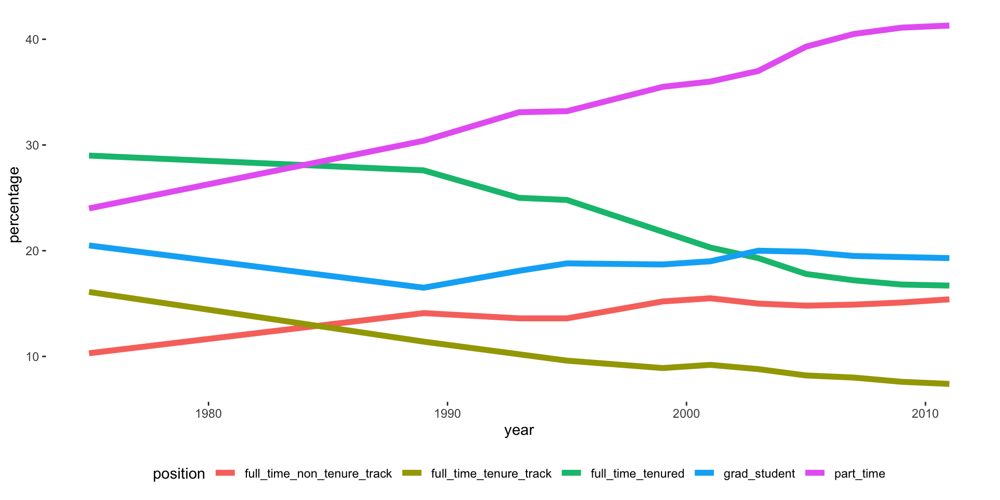
theme() anatomy
Make the title 16 point and bold
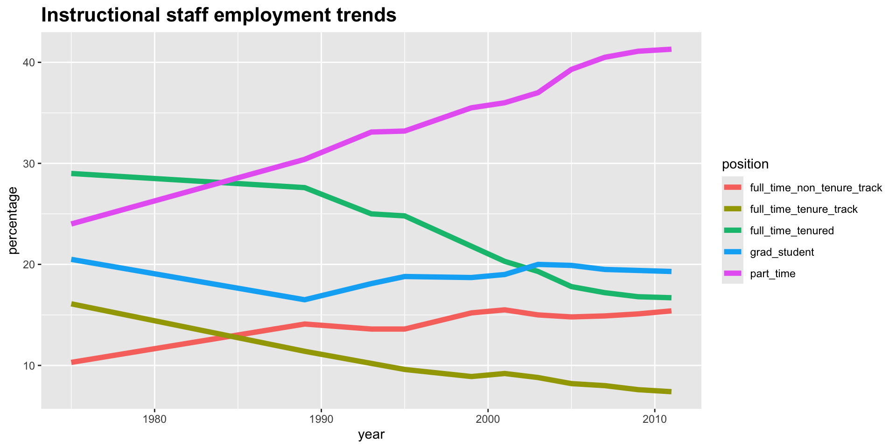
theme() anatomy
Place legend on the bottom
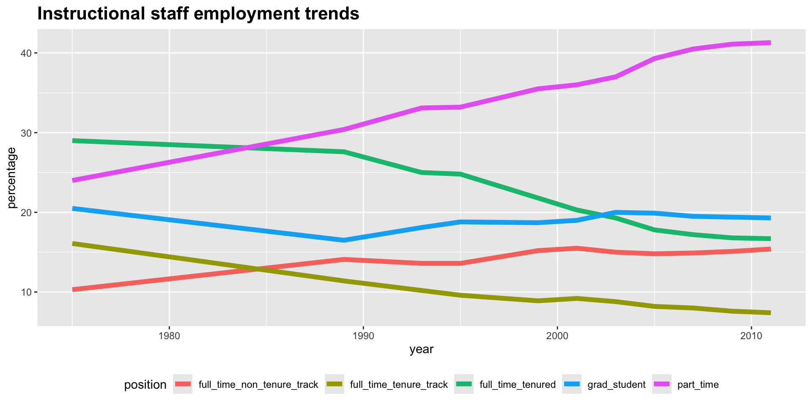
theme() anatomy
Make the background white
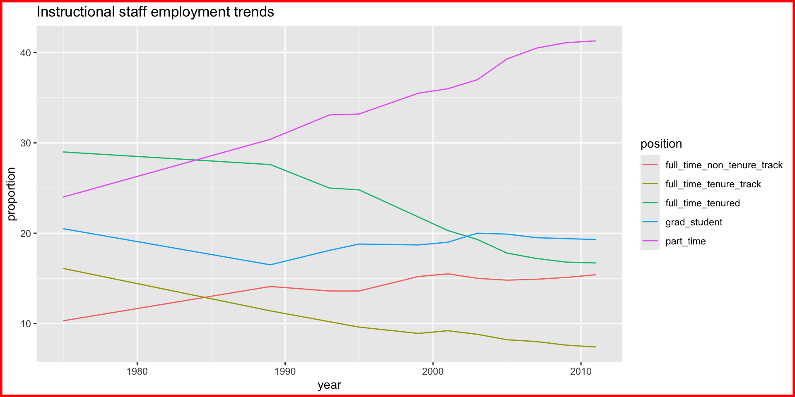
theme() Anatomy Reference Guide
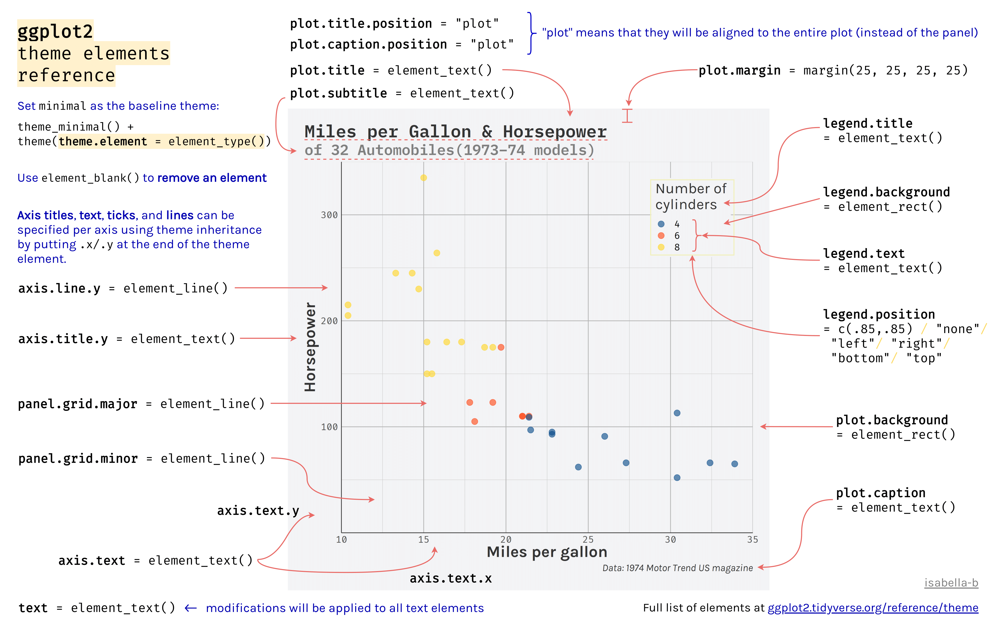
Modifying theme components
Four basic types of built-in element functions:
element_text()draws labels and headingselement_line()draws lines by color, linewidth and linetypeelement_rect()draws rectangles, mostly used for backgroundselement_blank()draws nothing
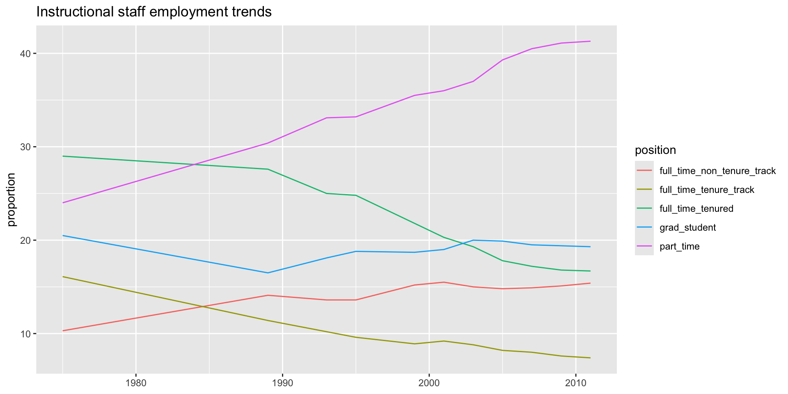
Modifying theme components
Can also add on to an existing theme:
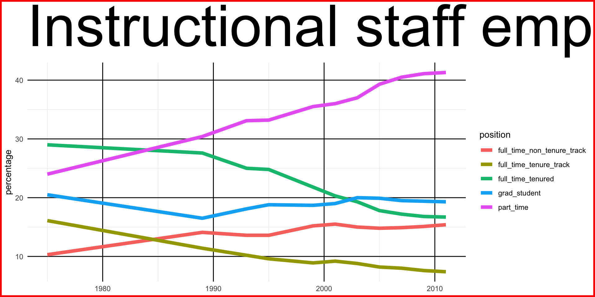
What happens if you put theme() before theme_minimal()?
Colors
Built-in colors
- R comes pre-loaded with 657 named colors
- You can also specify any color using a hex code (#RRGGBB)
- Use the
colors()command to see the available named colors
[1] "white" "aliceblue" "antiquewhite"
[4] "antiquewhite1" "antiquewhite2" "antiquewhite3"
[7] "antiquewhite4" "aquamarine" "aquamarine1"
[10] "aquamarine2" "aquamarine3" "aquamarine4"
[13] "azure" "azure1" "azure2"
[16] "azure3" "azure4" "beige"
[19] "bisque" "bisque1" "bisque2"
[22] "bisque3" "bisque4" "black"
[25] "blanchedalmond" "blue" "blue1"
[28] "blue2" "blue3" "blue4"
[31] "blueviolet" "brown" "brown1"
[34] "brown2" "brown3" "brown4"
[37] "burlywood" "burlywood1" "burlywood2"
[40] "burlywood3" "burlywood4" "cadetblue"
[43] "cadetblue1" "cadetblue2" "cadetblue3"
[46] "cadetblue4" "chartreuse" "chartreuse1"
[49] "chartreuse2" "chartreuse3" "chartreuse4"
[52] "chocolate" "chocolate1" "chocolate2"
[55] "chocolate3" "chocolate4" "coral"
[58] "coral1" "coral2" "coral3"
[61] "coral4" "cornflowerblue" "cornsilk"
[64] "cornsilk1" "cornsilk2" "cornsilk3"
[67] "cornsilk4" "cyan" "cyan1"
[70] "cyan2" "cyan3" "cyan4"
[73] "darkblue" "darkcyan" "darkgoldenrod"
[76] "darkgoldenrod1" "darkgoldenrod2" "darkgoldenrod3"
[79] "darkgoldenrod4" "darkgray" "darkgreen"
[82] "darkgrey" "darkkhaki" "darkmagenta"
[85] "darkolivegreen" "darkolivegreen1" "darkolivegreen2"
[88] "darkolivegreen3" "darkolivegreen4" "darkorange"
[91] "darkorange1" "darkorange2" "darkorange3"
[94] "darkorange4" "darkorchid" "darkorchid1"
[97] "darkorchid2" "darkorchid3" "darkorchid4"
[100] "darkred" "darksalmon" "darkseagreen"
[103] "darkseagreen1" "darkseagreen2" "darkseagreen3"
[106] "darkseagreen4" "darkslateblue" "darkslategray"
[109] "darkslategray1" "darkslategray2" "darkslategray3"
[112] "darkslategray4" "darkslategrey" "darkturquoise"
[115] "darkviolet" "deeppink" "deeppink1"
[118] "deeppink2" "deeppink3" "deeppink4"
[121] "deepskyblue" "deepskyblue1" "deepskyblue2"
[124] "deepskyblue3" "deepskyblue4" "dimgray"
[127] "dimgrey" "dodgerblue" "dodgerblue1"
[130] "dodgerblue2" "dodgerblue3" "dodgerblue4"
[133] "firebrick" "firebrick1" "firebrick2"
[136] "firebrick3" "firebrick4" "floralwhite"
[139] "forestgreen" "gainsboro" "ghostwhite"
[142] "gold" "gold1" "gold2"
[145] "gold3" "gold4" "goldenrod"
[148] "goldenrod1" "goldenrod2" "goldenrod3"
[151] "goldenrod4" "gray" "gray0"
[154] "gray1" "gray2" "gray3"
[157] "gray4" "gray5" "gray6"
[160] "gray7" "gray8" "gray9"
[163] "gray10" "gray11" "gray12"
[166] "gray13" "gray14" "gray15"
[169] "gray16" "gray17" "gray18"
[172] "gray19" "gray20" "gray21"
[175] "gray22" "gray23" "gray24"
[178] "gray25" "gray26" "gray27"
[181] "gray28" "gray29" "gray30"
[184] "gray31" "gray32" "gray33"
[187] "gray34" "gray35" "gray36"
[190] "gray37" "gray38" "gray39"
[193] "gray40" "gray41" "gray42"
[196] "gray43" "gray44" "gray45"
[199] "gray46" "gray47" "gray48"
[202] "gray49" "gray50" "gray51"
[205] "gray52" "gray53" "gray54"
[208] "gray55" "gray56" "gray57"
[211] "gray58" "gray59" "gray60"
[214] "gray61" "gray62" "gray63"
[217] "gray64" "gray65" "gray66"
[220] "gray67" "gray68" "gray69"
[223] "gray70" "gray71" "gray72"
[226] "gray73" "gray74" "gray75"
[229] "gray76" "gray77" "gray78"
[232] "gray79" "gray80" "gray81"
[235] "gray82" "gray83" "gray84"
[238] "gray85" "gray86" "gray87"
[241] "gray88" "gray89" "gray90"
[244] "gray91" "gray92" "gray93"
[247] "gray94" "gray95" "gray96"
[250] "gray97" "gray98" "gray99"
[253] "gray100" "green" "green1"
[256] "green2" "green3" "green4"
[259] "greenyellow" "grey" "grey0"
[262] "grey1" "grey2" "grey3"
[265] "grey4" "grey5" "grey6"
[268] "grey7" "grey8" "grey9"
[271] "grey10" "grey11" "grey12"
[274] "grey13" "grey14" "grey15"
[277] "grey16" "grey17" "grey18"
[280] "grey19" "grey20" "grey21"
[283] "grey22" "grey23" "grey24"
[286] "grey25" "grey26" "grey27"
[289] "grey28" "grey29" "grey30"
[292] "grey31" "grey32" "grey33"
[295] "grey34" "grey35" "grey36"
[298] "grey37" "grey38" "grey39"
[301] "grey40" "grey41" "grey42"
[304] "grey43" "grey44" "grey45"
[307] "grey46" "grey47" "grey48"
[310] "grey49" "grey50" "grey51"
[313] "grey52" "grey53" "grey54"
[316] "grey55" "grey56" "grey57"
[319] "grey58" "grey59" "grey60"
[322] "grey61" "grey62" "grey63"
[325] "grey64" "grey65" "grey66"
[328] "grey67" "grey68" "grey69"
[331] "grey70" "grey71" "grey72"
[334] "grey73" "grey74" "grey75"
[337] "grey76" "grey77" "grey78"
[340] "grey79" "grey80" "grey81"
[343] "grey82" "grey83" "grey84"
[346] "grey85" "grey86" "grey87"
[349] "grey88" "grey89" "grey90"
[352] "grey91" "grey92" "grey93"
[355] "grey94" "grey95" "grey96"
[358] "grey97" "grey98" "grey99"
[361] "grey100" "honeydew" "honeydew1"
[364] "honeydew2" "honeydew3" "honeydew4"
[367] "hotpink" "hotpink1" "hotpink2"
[370] "hotpink3" "hotpink4" "indianred"
[373] "indianred1" "indianred2" "indianred3"
[376] "indianred4" "ivory" "ivory1"
[379] "ivory2" "ivory3" "ivory4"
[382] "khaki" "khaki1" "khaki2"
[385] "khaki3" "khaki4" "lavender"
[388] "lavenderblush" "lavenderblush1" "lavenderblush2"
[391] "lavenderblush3" "lavenderblush4" "lawngreen"
[394] "lemonchiffon" "lemonchiffon1" "lemonchiffon2"
[397] "lemonchiffon3" "lemonchiffon4" "lightblue"
[400] "lightblue1" "lightblue2" "lightblue3"
[403] "lightblue4" "lightcoral" "lightcyan"
[406] "lightcyan1" "lightcyan2" "lightcyan3"
[409] "lightcyan4" "lightgoldenrod" "lightgoldenrod1"
[412] "lightgoldenrod2" "lightgoldenrod3" "lightgoldenrod4"
[415] "lightgoldenrodyellow" "lightgray" "lightgreen"
[418] "lightgrey" "lightpink" "lightpink1"
[421] "lightpink2" "lightpink3" "lightpink4"
[424] "lightsalmon" "lightsalmon1" "lightsalmon2"
[427] "lightsalmon3" "lightsalmon4" "lightseagreen"
[430] "lightskyblue" "lightskyblue1" "lightskyblue2"
[433] "lightskyblue3" "lightskyblue4" "lightslateblue"
[436] "lightslategray" "lightslategrey" "lightsteelblue"
[439] "lightsteelblue1" "lightsteelblue2" "lightsteelblue3"
[442] "lightsteelblue4" "lightyellow" "lightyellow1"
[445] "lightyellow2" "lightyellow3" "lightyellow4"
[448] "limegreen" "linen" "magenta"
[451] "magenta1" "magenta2" "magenta3"
[454] "magenta4" "maroon" "maroon1"
[457] "maroon2" "maroon3" "maroon4"
[460] "mediumaquamarine" "mediumblue" "mediumorchid"
[463] "mediumorchid1" "mediumorchid2" "mediumorchid3"
[466] "mediumorchid4" "mediumpurple" "mediumpurple1"
[469] "mediumpurple2" "mediumpurple3" "mediumpurple4"
[472] "mediumseagreen" "mediumslateblue" "mediumspringgreen"
[475] "mediumturquoise" "mediumvioletred" "midnightblue"
[478] "mintcream" "mistyrose" "mistyrose1"
[481] "mistyrose2" "mistyrose3" "mistyrose4"
[484] "moccasin" "navajowhite" "navajowhite1"
[487] "navajowhite2" "navajowhite3" "navajowhite4"
[490] "navy" "navyblue" "oldlace"
[493] "olivedrab" "olivedrab1" "olivedrab2"
[496] "olivedrab3" "olivedrab4" "orange"
[499] "orange1" "orange2" "orange3"
[502] "orange4" "orangered" "orangered1"
[505] "orangered2" "orangered3" "orangered4"
[508] "orchid" "orchid1" "orchid2"
[511] "orchid3" "orchid4" "palegoldenrod"
[514] "palegreen" "palegreen1" "palegreen2"
[517] "palegreen3" "palegreen4" "paleturquoise"
[520] "paleturquoise1" "paleturquoise2" "paleturquoise3"
[523] "paleturquoise4" "palevioletred" "palevioletred1"
[526] "palevioletred2" "palevioletred3" "palevioletred4"
[529] "papayawhip" "peachpuff" "peachpuff1"
[532] "peachpuff2" "peachpuff3" "peachpuff4"
[535] "peru" "pink" "pink1"
[538] "pink2" "pink3" "pink4"
[541] "plum" "plum1" "plum2"
[544] "plum3" "plum4" "powderblue"
[547] "purple" "purple1" "purple2"
[550] "purple3" "purple4" "red"
[553] "red1" "red2" "red3"
[556] "red4" "rosybrown" "rosybrown1"
[559] "rosybrown2" "rosybrown3" "rosybrown4"
[562] "royalblue" "royalblue1" "royalblue2"
[565] "royalblue3" "royalblue4" "saddlebrown"
[568] "salmon" "salmon1" "salmon2"
[571] "salmon3" "salmon4" "sandybrown"
[574] "seagreen" "seagreen1" "seagreen2"
[577] "seagreen3" "seagreen4" "seashell"
[580] "seashell1" "seashell2" "seashell3"
[583] "seashell4" "sienna" "sienna1"
[586] "sienna2" "sienna3" "sienna4"
[589] "skyblue" "skyblue1" "skyblue2"
[592] "skyblue3" "skyblue4" "slateblue"
[595] "slateblue1" "slateblue2" "slateblue3"
[598] "slateblue4" "slategray" "slategray1"
[601] "slategray2" "slategray3" "slategray4"
[604] "slategrey" "snow" "snow1"
[607] "snow2" "snow3" "snow4"
[610] "springgreen" "springgreen1" "springgreen2"
[613] "springgreen3" "springgreen4" "steelblue"
[616] "steelblue1" "steelblue2" "steelblue3"
[619] "steelblue4" "tan" "tan1"
[622] "tan2" "tan3" "tan4"
[625] "thistle" "thistle1" "thistle2"
[628] "thistle3" "thistle4" "tomato"
[631] "tomato1" "tomato2" "tomato3"
[634] "tomato4" "turquoise" "turquoise1"
[637] "turquoise2" "turquoise3" "turquoise4"
[640] "violet" "violetred" "violetred1"
[643] "violetred2" "violetred3" "violetred4"
[646] "wheat" "wheat1" "wheat2"
[649] "wheat3" "wheat4" "whitesmoke"
[652] "yellow" "yellow1" "yellow2"
[655] "yellow3" "yellow4" "yellowgreen" Built-in colors
Use the name of the color in quotes:

Built-in colors
You can specify colors for specific values using scale_fill_manual and a named vector as long as fill is mapped to the data:
Built-in colors
You can specify colors for specific values using scale_fill_manual and a named vector as long as fill is mapped to the data:

Built-in colors
What about our earlier line graph?
staff_long |>
ggplot(aes(x = year, y = percentage, color = position)) +
geom_line(linewidth = 2) +
scale_fill_manual(
values = c(
"full_time_non_tenure_track" = "skyblue",
"full_time_tenure_track" = "peachpuff1",
"full_time_tenured" = "palegreen1",
"grad_student" = "sandybrown",
"part_time" = "maroon"
)
)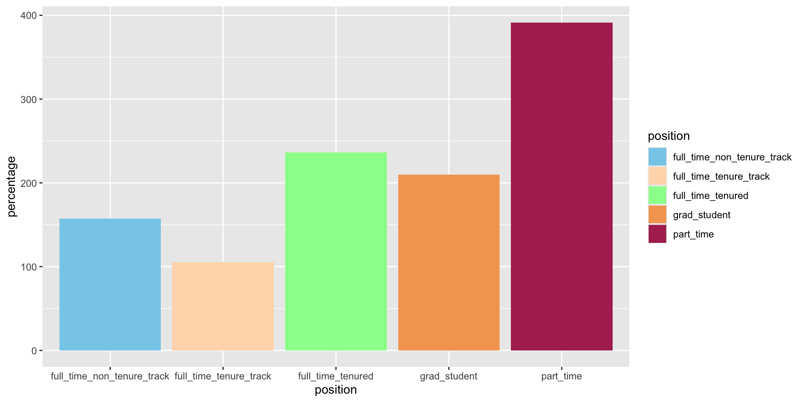
Built-in colors
We need to make sure we’re mapping the correct aesthetic:
staff_long |>
ggplot(aes(x = year, y = percentage, color = position)) +
geom_line(linewidth = 2) +
scale_color_manual(
values = c(
"full_time_non_tenure_track" = "skyblue",
"full_time_tenure_track" = "peachpuff1",
"full_time_tenured" = "palegreen1",
"grad_student" = "sandybrown",
"part_time" = "maroon"
)
)
Other Palette Packages
{ggplot2} palette packages
There are a ton of amazing palette packages out there! Here is an example from MetBrewer:
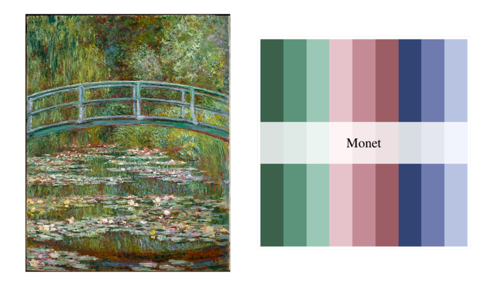
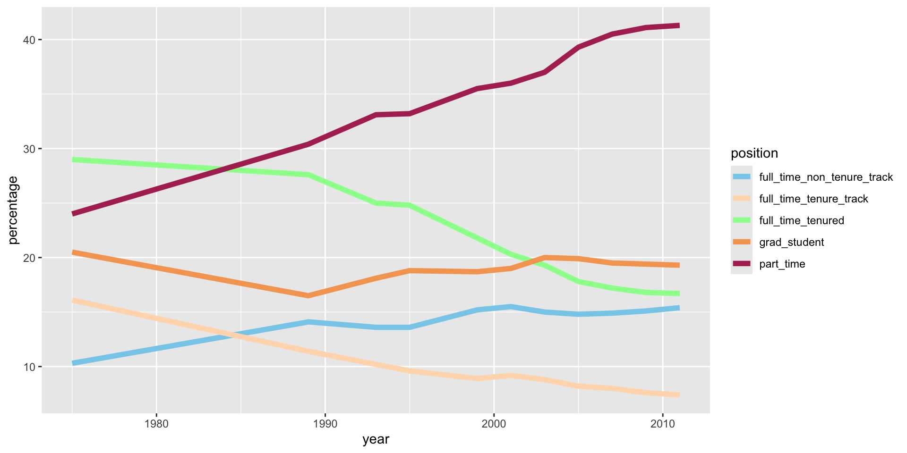
{ggplot2} palette packages
Let’s try the Egypt palette:
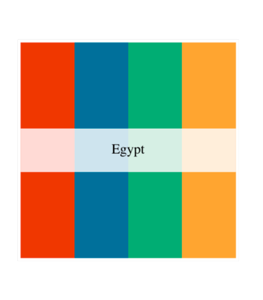
Error in `palette()`:
! Insufficient values in manual scale. 5 needed but only 4 provided.
Why didn’t this work?
{ggplot2} palette packages
- MetBrewer supports continuous palettes (gradients), too:
- Problem: Not a smooth/perceptually uniform gradient
viridis
viridis
- viridis is one of the most popular palettes in ggplot and in data viz
- Built into {ggplot2}
- produces a smooth gradient: equal perceived steps in color (i.e., no big jumps between colors)
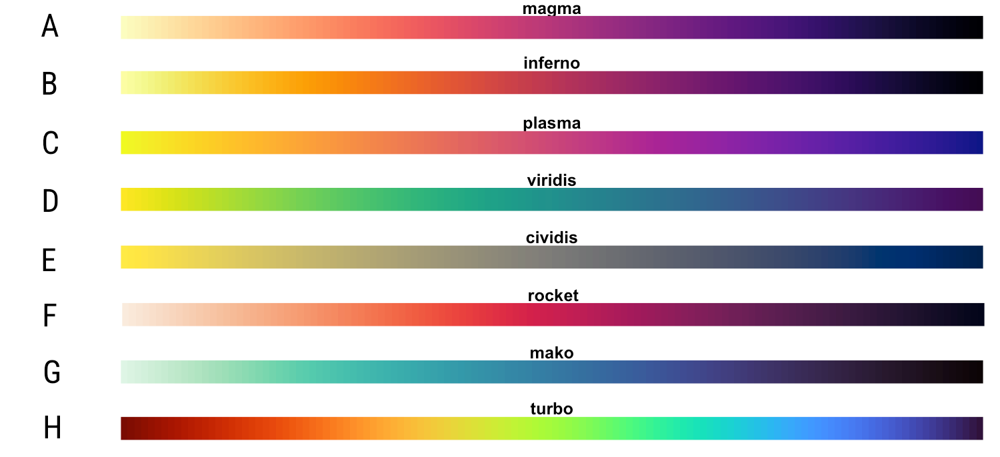
viridis
- How to use built-in viridis in your {ggplot2} code:
- Know your mapping variable (discrete or continuous?)
- Know your aesthetic (fill or color?)
| label | Discrete Variable | Continuous Variable |
|---|---|---|
| Fill (Background Color) |
scale_fill_viridis_d() |
scale_fill_viridis_c() |
| Color (Outline Color) |
scale_color_viridis_d() |
scale_color_viridis_c() |
viridis
viridis
You can specify other options for viridis, too!

viridis
How about with our bar chart?
viridis
How about with our bar chart?
Error in `scale_fill_viridis_c()`:
! Discrete value supplied to a continuous scale.
ℹ Example values: "full_time_non_tenure_track" and "part_time".Why didn’t it work?
viridis
We were trying to use the function for a continuous palette and our data (position) is discrete.
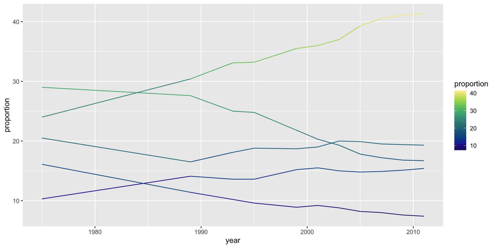
Accessibility
Colors
Colors
Some color palettes also consider accessibility:
- {viridis} is designed to be perceptually uniform (visually consistent change in color + accessible)
- {RColorBrewer} has colorblind-friendly palettes
- {MetBrewer} has colorblind-friendly palettes
- {Paletteer}’s website help you visualize palettes to approximate effects of colorblindness
- Accessible Custom Color Palette Generator: https://venngage.com/tools/accessible-color-palette-generator
Collaborative Practice
Collaborative Practice
- Launch into breakout rooms.
- Cameras off: 3-5 min to review task
- Cameras on: collaborative task work
Looking Ahead
Looking Ahead
- Reading:
- Schwabish (2021), Ch 2
- Christiansen (2023), Ch 9
- France (2020)
- Comment on Mini Project #1 Plot Gallery
- Something you learned/liked! Celebrate each others’ work!
- Assignment 8: Graphing and Improving Plots
Mini-Project #2: Assigned Next Week
Finding palette packages
This is a fantastic resource: https://github.com/EmilHvitfeldt/r-color-palettes
As is this: https://github.com/erikgahner/awesome-ggplot2?tab=readme-ov-file#themes-and-aesthetics
Attribution for some materials used today
- Data Science in a Box by Mine Çetinkaya-Rundel
- https://datasciencebox.org/
- License: Creative Commons Attribution-ShareAlike 4.0 International
UTK Educational Data Science